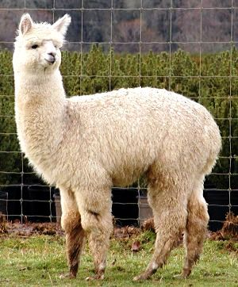
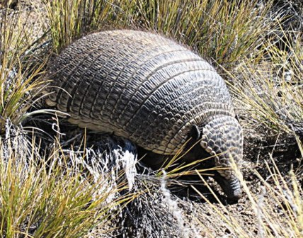
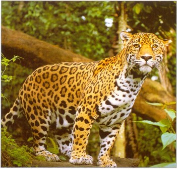

(del aimara all-paka) Mamífero rumiante, de la misma familia que la llama, propia de América Meridional y muy apreciado por su pelo, que se emplea en la industria textil. Alpaca, mamífero rumiante sudamericano de la misma familia que la llama y la vicuña. Se encuentra parcialmente domesticada y es probable que derive del guanaco, que es la especie salvaje. El hábitat natural de la alpaca se encuentra en los Andes, en América del Sur. Es habitual que los indígenas de las tierras altas de Perú y de Chile las mantengan formando rebaños. La alpaca es muy apreciada por su pelo, que se emplea en la industria textil.
(de armado) Mamífero acorazado del orden de los Desdentados, con algunos dientes laterales. El cuerpo, que mide de tres a cinco decímetros de longitud, está protegido por una armadura constituida por un mosaico de pequeñas placas óseas que se desarrollan en la capa inferior de la piel o dermis, y están recubiertas de epidermis córnea. Las escamas córneas del caparazón son movibles, de modo que el animal puede arrollarse sobre sí mismo. Constituye un sistema de protección contra los depredadores; en algunas especies está protegida incluso la cola. Todas las especies son propias de América Meridional.
(de la voz yaguá "fiera") Felino de hasta dos metros de longitud y unos 80 cm de alzada, pelaje de color amarillo dorado con manchas en forma de anillos negros, garganta y vientre blanquecinos, que vive en zonas pantanosas de América, desde California hasta Patagonia. Es el félido más grande y poderoso del continente americano. Su nombre en las lenguas indígenas de las selvas subtropicales es yaguar, que proviene de la voz yaguá ("fiera"). El jaguar vive desde el sur de los Estados Unidos hasta el sur de Brasil y norte de Argentina y su hábitat está constituido por una gran variedad de ecosistemas: selvas tropicales, bosques de hoja caducifolia, zonas de matorral, llanuras herbáceas y zonas ribereñas. Es más abundante en los bosques húmedos tropicales de Centroamérica y Brasil, y su presencia disminuye en las montañas, donde es sustituido por el puma.
